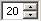
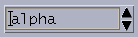
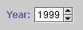
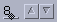

JSpinner - 단순한 순서 컨테이너이 문서에서는, 새로운 Swing 컴퍼넌트인 JSpinner 에 대해 설명합니다.
무엇보다 많이 작성의 요구가 있던 Swing 컴퍼넌트의 1 개에, 스피나가 있습니다. 이것은, 사용자가 순서 붙일 수 있었던 집합으로부터 수치 또는 객체를 선택할 수 있도록(듯이) 하는 단일행의 입력 필드입니다. 스피나에는 일반적으로, 선택 가능한 값을 단계적으로 표시하기 위한 1조의 작은 화살표형 버튼이 제공되어 오름새와 아래로 향한 커서 키에서도 값을 순환해 표시할 수 있습니다. 사용자는, 유효한 값을 스피나에 직접 입력할 수도 있습니다. combobox에도 비슷한 기능이 있습니다만, 중요한 데이터가 이해하기 어려워질 가능성이 있는 드롭 다운 리스트를 필요로 하지 않는 스피나 쪽이, 때로는 선호됩니다.
이 변경에 관련하는 버그 추적 리포트: 4290529 .
스피나는, 최근의 GUI 로 일반적인 것입니다. 다음에, 몇개의 일반적인 Look & Feel 와 OpenWindows 로부터의 예를 나타냅니다.
|  |  |  |  | |
| Windows | CDE/Motif | JLF | Mac Aqua | OpenWindows |
이러한 스피나는 모두, 매우 단순한 동작을 실시합니다. 스피나에 포커스가 있을 때 화살표 버튼을 클릭하면(자), 필드의 값이 바뀝니다. 키보드의 오름새 커서 키와 하향 커서 키에서도 같은 결과가 됩니다. 어플리케이션에 따라서는, 스피나의 값이 상한 또는 하한에 이르면(자), 향상되어 또는 하향 화살표 버튼이 무효가 되거나 그 값이 반대의 극한치에 리셋 되거나 합니다.
JSpinner,SpinnerModel,SpinnerListModelJSpinner 클래스는, 3 살의 아이를 관리하는 단순한 Swing 컨테이너입니다. 아이란, 2 개의 화살표 버튼과 스피나의 값을 표시하기 위한 「에디터」라고 불리는 1 개의 컴퍼넌트입니다. 스피나에 표시되는 값은,SpinnerModel 로 불리는 객체의 순서로부터 구성되는 모델에 의해 캡슐화됩니다.
public interface SpinnerModel {
Object getValue();
void setValue(Object);
Object getNextValue();
Object getPreviousValue();
void addChangeListener(ChangeListener x);
void removeChangeListener(ChangeListener x); }
SpinnerModel 인터페이스는,ListModel 와 닮아 있어 양쪽 모두 값의 순서를 표현합니다만, 중요한 차이점이 몇개인가 있습니다.
SpinnerModel 의 모델은, 일련의 요소에의 랜덤인 액세스는 지원하지 않는다. 「현재」, 「다음」, 및 「전」이라고 하는, 줄지어 있는 3 개의 값에만, 한 번에 액세스 할 수 있다.
size 메소드로부터 순서의 길이는 돌려주어지지 않다.
SpinnerModel 모델의 값의 프로퍼티은 읽어내/기입 양용이며, 읽기 전용의 ListModels 순서의 요소와는 다르다. 이 차이가,JList 와 JSpinner 의 역할의 차이를 반영하고 있다. 전자는 리스트로부터의 1 개(살) 이상의 항목의 「선택」을 단순화 하기 위해서 설계된 것에 대해, 후자는 단일의 값을 직접 입력하기 위해서 설계되었다.
JSpinner 와 그 모델과의 관계는 단순합니다. 에디터 컴퍼넌트는 ChangeListener 경유로 모델을 감시해,SpinnerModel.getValue() 에 의해 반환된 객체를 항상 표시합니다. 오름새 및 아래로 향한 화살표 버튼은, 각각 setValue(getNextValue()) 또는 setValue(getPreviousValue()) 를 호출하는 것으로 값을 갱신합니다. 순서의 최후 또는 선두에 이르렀을 때에 getNextValue 및 getPreviousValue 메소드는 null 를 돌려주므로, 화살표 버튼의 액션에서는, 모델의 값을 갱신하기 전에 null 를 체크할 필요가 있습니다. 에디터가 있는 종의 기입해 가능한 필드의 경우는, 모델에 정의된 제약을 존중하는 것, 또는 무효인 값에 대해서 setValue 에 의해 throw 된 IllegalArgumentException 를 처리하는 것이, 에디터의 역할이 됩니다.
SpinnerListModel 에서는,java.util.List 및 객체 배열이라고 하는, 2 개(살)의 일반적인 가변의 순서형이 지원됩니다. 디폴트의 로케일로 사용자가 요일을 선택할 수 있도록(듯이) 하는 JSpinner 를 작성하는 예는, 다음과 같이 됩니다.
String[] days = new DateFormatSymbols(). getWeekdays();
SpinnerModel model = new SpinnerListModel(days);
JSpinner spinner = new JSpinner(model);
스피나의 model 프로퍼티을 초기화하는 것에 가세해, 이러한 생성자 이,SpinnerModel 의 value 를 표시하는 에디터 컴퍼넌트를 작성합니다. 또, 생성자 을 사용해 value 를 변경할 수 있습니다. 디폴트에서는, 이 때문에 protected JSpinner.createEditor 메소드가 사용되어 이 메소드가, 모델을 표시하기 위해서 구성된 JFormattedTextField 를 작성합니다.
스피나의 현재가를 검출 또는 초기화하려면 , 모델의 value 프로퍼티을 사용하는지, 또는, 모델에 위양 된지 얼마 안된, 편리한 JSpinner value 프로퍼티을 사용할 수가 있습니다. 예를 들어, 위의 예로 구성된 스피나를 사용하면(자), 다음의 2 개의 문장은 동등합니다.
String selectedDay = spinner.getModel(). getValue(). toString();
String selectedDay = spinner.getValue(). toString();
스피나의 값의 설정은 닮았습니다. 모델이 지원하지 않는 객체에 SpinnerModel 의 값을 설정하려고 하면(자),IllegalArgumentException 가 throw 됩니다.
일자와 수치는, 스피나의 컴퍼넌트에 가장 일반적으로 적용되는 2개(살)입니다. 이러한 형태의 스피나화를 단순하게 하기 위해서,SpinnerDateModel 와 SpinnerNumberModel 의, 2 개의 SpinnerModel 구현 클래스가 추가되었습니다.
SpinnerDateModel스피나의 가장 일반적인 사용법의 1 개가, 편집 가능한 일자를 컴팩트하게 제시하는 것입니다. 다음에, 사용자가 완전하게 로컬라이즈 된 일자를 입력할 수 있는 JSpinner 의 작성예를 나타냅니다.
SpinnerDateModel model = new SpinnerDateModel();
JSpinner spinner = new JSpinner(model);
Date value = model.getDate();
이 예로,JSpinner 생성자 은, 일자를 편집하는 JFormattedTextField 에디터를 작성해,ChangeListener 를 SpinnerDateModel 에 추가해, 에디터와 모델의 동기를 유지합니다.
여기서,SpinnerDateModel API 를 나타냅니다. 이 API 에는,start,end, 및 stepSize 의 3 개의 새로운 읽기/기입 양용 프로퍼티과Date 에 캐스트 하는 값을 돌려주는 읽기 전용의 date 프로퍼티이 추가되었습니다.
public class SpinnerDateModel extends AbstractSpinnerModel {
public SpinnerDateModel(Date value, Comparable start, Comparable end, int stepSize)
public SpinnerDateModel()
public void setStart(Comparable start)
public Comparable getStart()
public void setEnd(Comparable end)
public Comparable getEnd()
public Object getNextValue()
public Object getPreviousValue()
public Date getDate()
public Object getValue()
public void setValue(Object value) }
startDate 및 endDate 프로퍼티은, 상한 또는 하한이 없는 것을 나타내기 위해서(때문에),null 가 될 가능성도 있습니다. 인수를 지정하지 않는 SpinnerDateModel 생성자 의 경우는, 개시일과 종료일의 양쪽 모두를 null 에 초기화해, 모델의 최초의 일자는 현재의 일자입니다.
stepSize 프로퍼티의 값은,Calendar 내에서 필드를 지정하는 java.util.Calendar 정수의 1 개로 할 필요가 있습니다. getNextValue 및 getPreviousValue 메소드는,stepSize 프로퍼티의 값의 분만큼 일자를 전방 또는 후방으로 변경합니다. 예를 들어,stepSize 가 Calendar.DAY_OF_WEEK 의 경우는,nextValue 로 현재의 value 보다 24 시간 후의 Date 를 작성해,previousValue 로 24 시간전의 Date 를 작성합니다.
stepSize 에 유효한 값은, 다음과 같습니다.
Calendar.ERA
Calendar.YEAR
Calendar.MONTH
Calendar.WEEK_OF_YEAR
Calendar.WEEK_OF_MONTH
Calendar.DAY_OF_MONTH
Calendar.DAY_OF_YEAR
Calendar.DAY_OF_WEEK
Calendar.DAY_OF_WEEK_IN_MONTH
Calendar.AM_PM
Calendar.HOUR
Calendar.HOUR_OF_DAY
Calendar.MINUTE
Calendar.SECOND
Calendar.MILLISECOND
디폴트의 SpinnerDateModel editor 는, 텍스트의 커서 위치에 근거해 stepSize 프로퍼티을 조절합니다. 예를 들어, 커서가 에디터의 month subfield로 이동했을 경우는,incrementSize 가 Calendar.DAY_OF_MONTH 으로 변경됩니다.
스피나는 자주, 기온으로부터 주가까지의 모든 수치를 나타내는, 편집 가능한 정수 및 실수를 제시하기 위해서 사용됩니다. SpinnerNumberModel 에서는,Byte 로부터 Double 까지의 기본적인 모든 Java 의 Number 형을 기본적으로 지원합니다.
초기치를 500.0 으로 해, 0.0 에서 1000.0 의 사이에 1/8 의 실수의 배수를 사용자가 선택할 수 있도록(듯이) 하는 스피나를 작성하려면 , 다음과 같이 코딩 합니다.
SpinnerNumberModel model = new SpinnerNumberModel(500.0, 0.0, 1000.0, 0.625);
JSpinner spinner = new JSpinner(model);
double value = model.getNumber(). doubleValue();
이 예로,JSpinner 생성자 은, 실수를 편집하기 위한 JFormattedTextField 에디터를 작성해,ChangeListener 를 SpinnerDateModel 에 추가해, 에디터와 모델의 동기를 유지하고 있습니다.
여기서,SpinnerNumberModel API 에 대해 간단하게 정리합니다. 이 API 에는,minimum,maximum, 및 stepSize 의 3 개의 새로운 읽기/기입 양용 프로퍼티과Number 에 캐스트 하는 value 를 돌려주는 읽기 전용의 number 프로퍼티이 추가되었습니다.
public class SpinnerNumberModel extends AbstractSpinnerModel {
public SpinnerNumberModel(Number value, Comparable minimum, Comparable maximum, Number stepSize)
public SpinnerNumberModel(int value, int minimum, int maximum, int stepSize)
public SpinnerNumberModel(double value, double minimum, double maximum, double stepSize)
public SpinnerNumberModel()
public void setMinimum(Comparable minimum)
public Comparable getMinimum()
public void setMaximum(Comparable maximum)
public Comparable getMaximum()
public void setStepSize(Number stepSize)
public Number getStepSize()
public Object getNextValue()
public Object getPreviousValue()
public Number getNumber()
public Object getValue()
public void setValue(Object value) }
스피나의 지원해, 다음의 6 개의 클래스와 1 개의 인터페이스 ( 또,SpinnerDateModel 에 관해서는,minimum 및 maximum 프로퍼티이, 그것보다 큰 값 또는 작은 값이 없는 것을 나타내기 위해서(때문에),null 가 될 가능성도 있습니다. stepSize 프로퍼티에는,nextValue 또는 previousValue 를 계산하기 위해서 value 와 가산 또는 감산하는 값을 지정합니다.
스피나 API 의 통계
SpinnerModel)가 javax.swing 패키지에 추가되었습니다.
SpinnerUI 가 javax.swing.plaf 패키지에,BasicSpinnerUI 가 javax.swing.plaf.basic 패키지에 추가되었습니다.